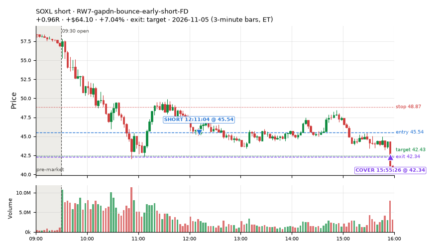
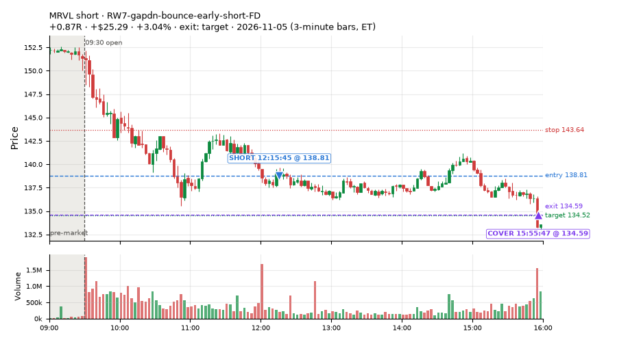
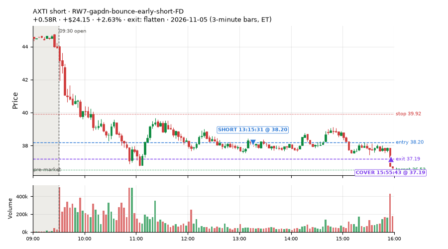
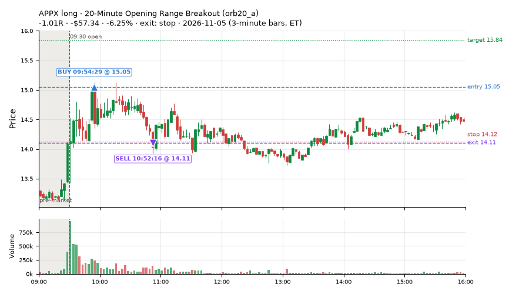
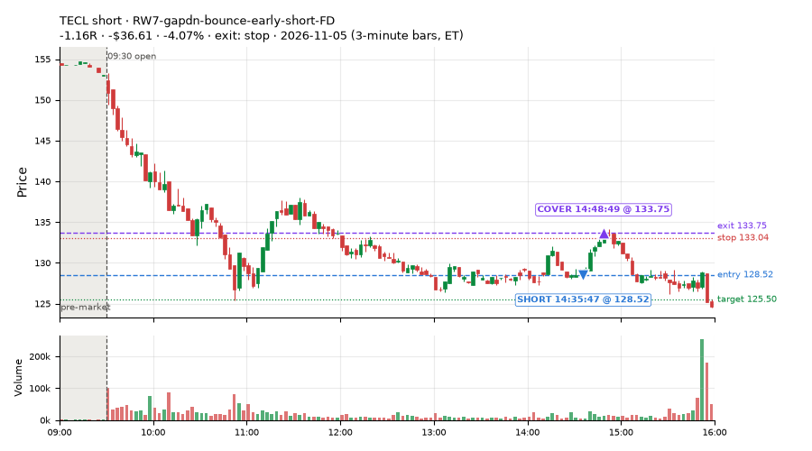
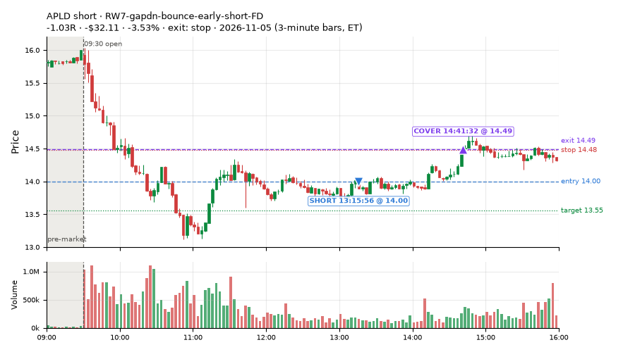
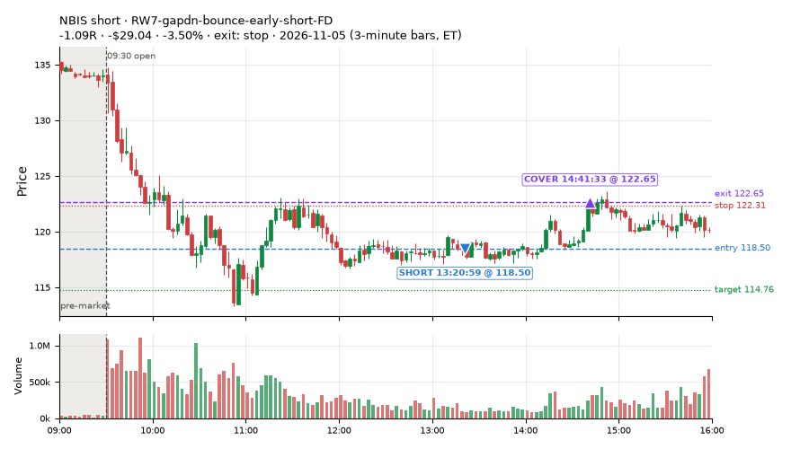
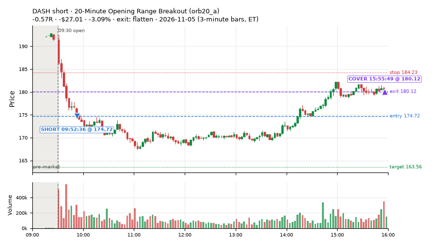

91 trades · win rate 53% · P/L $58.05
PROBATION: no live setup has passed both locked test periods. 10 owner-directed setups added 2026-10-08 (MarcoFlow top 5 + 5 new), untested live. RW6G1 (RW6 + VWAP band guard) added 2026-10-09, probation.

| Symbol | Setup | Side | In | Out | Entry | Exit | Exit reason | % gained | P/L |
|---|---|---|---|---|---|---|---|---|---|
| SOXL | RW7-gapdn-bounce-early-short-FD | short | 12:11 | 15:55 | 45.54 | 42.34 | target | +7.04% | $64.10 |
| MRVL | RW7-gapdn-bounce-early-short-FD | short | 12:15 | 15:55 | 138.81 | 134.59 | target | +3.04% | $25.29 |
| AXTI | RW7-gapdn-bounce-early-short-FD | short | 13:15 | 15:55 | 38.20 | 37.19 | flatten | +2.63% | $24.15 |
| Symbol | Setup | Side | In | Out | Entry | Exit | Exit reason | % lost | P/L |
|---|---|---|---|---|---|---|---|---|---|
| APPX | orb20_a | long | 09:54 | 10:52 | 15.05 | 14.11 | stop | -6.25% | $-57.34 |
| TECL | RW7-gapdn-bounce-early-short-FD | short | 14:35 | 14:48 | 128.52 | 133.75 | stop | -4.07% | $-36.61 |
| APLD | RW7-gapdn-bounce-early-short-FD | short | 13:15 | 14:41 | 14.00 | 14.49 | stop | -3.53% | $-32.11 |
| NBIS | RW7-gapdn-bounce-early-short-FD | short | 13:20 | 14:41 | 118.50 | 122.65 | stop | -3.50% | $-29.04 |
| DASH | orb20_a | short | 09:52 | 15:55 | 174.72 | 180.12 | flatten | -3.09% | $-27.01 |








Signal to fill: median 2s, 90th percentile 4s (91 trades). Bars close each minute; the order follows the bar close.
Best excursion (MFE): median 0.72R; worst (MAE) median 0.72R. 21% of trades never got +0.25R in our favour; 3 reached +1R and still closed at or below 0.
| Symbol | Setup | Best R | Worst R | Closed R |
|---|---|---|---|---|
| VIK | RW7-gapdn-bounce-early-short-FD | +1.25 | -1.02 | -1.03 |
| J | CWT05-flush-m05-v3-long | +0.80 | -1.21 | -1.42 |
| HUBB | exhaustion_short | +1.09 | -1.05 | -1.05 |
| FIGR | exhaustion_short | +0.91 | -1.05 | -1.12 |
| TSM | RW7-gapdn-bounce-early-short-FD | +0.94 | -1.05 | -1.04 |
| Entry time | Trades | Win | Avg R | P/L |
|---|---|---|---|---|
| 09:50-10:30 | 3 | 33% | -0.15 | $-75.85 |
| 10:30-11:30 | 16 | 31% | -0.47 | $-63.05 |
| 11:30-13:00 | 40 | 70% | +0.46 | $268.37 |
| 13:00-14:00 | 8 | 12% | -0.71 | $-96.50 |
| 14:00-16:00 | 24 | 54% | +0.09 | $25.08 |
| Setup | Trades | Win | Avg R | Adj R (net of SPY) | Avg R ex-market (all sessions) | P/L |
|---|---|---|---|---|---|---|
| Panic Flush Reversal (3x volume) (CWT05-flush-m05-v3-long) | 16.0 | 38% | -0.37 | -0.13 | -0.09 (beta +1.73, n 48) | $-39.98 |
| L3-gap-slope-lowdist-FD | 6.0 | 83% | +0.44 | +0.25 | -0.10 (beta -2.08, n 65) | $47.92 |
| NS1-rsidip-rsi5pop-long-FD | 1.0 | 100% | +0.20 | +0.22 | -0.07 (beta +1.30, n 50) | $4.59 |
| Big Loser VWAP Reclaim Fade (NS3-failed-vwap-reclaim-short) owner-directed; holdouts once: Sep-Oct +0.119R n65, Apr-Jun -0.136R n524 | 4.0 | 0% | -1.06 | -1.82 | -0.20 (beta -0.73, n 50) | $-36.26 |
| RW7-gapdn-bounce-early-short-FD | 49.0 | 63% | +0.30 | -0.09 | -0.13 (beta -1.37, n 397) | $161.61 |
| Afternoon Blow-off Short (exhaustion_short) failed Apr-Jun holdout: -0.020R/trade over 622 trades | 7.0 | 43% | -0.10 | -0.43 | +0.02 (beta -0.23, n 62) | $-16.49 |
| exhaustion_short-FD | 1.0 | 100% | +1.94 | +0.63 | -0.27 (beta -1.48, n 82) | $16.90 |
| Index Last-Half-Hour Momentum (intraday_momentum) failed Apr-Jun holdout: -0.091R/trade over 147 trades | 4.0 | 0% | -0.30 | -0.05 | -0.29 (beta -0.22, n 42) | $-4.39 |
| 20-Minute Opening Range Breakout (orb20_a) failed Apr-Jun holdout: -0.040R/trade over 421 trades | 3.0 | 33% | -0.15 | -0.48 | -0.05 (beta +0.11, n 28) | $-75.85 |
Market direction (SPY, beta 1) accounted for $229.89 of today's $58.05; the rest ($-171.84) came from the setups themselves. Avg R net of SPY: -0.17 (incl. a hedge leg's cost; report only).
13 setups live today. Today: 185 signals, 91 taken, 3 lost because another setup held the symbol (2%). Since 2026-10-09 (20 sessions): 8687 signals, 3562 taken, 748 lost to other setups (9%). Peak open positions today 35 of 400 slots. Earnings blackout removed 1502 symbols before scanning.
Simulated playing time (not live): 4793 what-if trades of signals not taken, avg -0.13R, 49% winners; of them 595 lost to another setup (avg +0.02R).
Silent: IDX1-qqq100-0955-TQQQ-trail, IDX1-qqq100-0955-TQQQ-hold, IDX2-spy075-0945-3x-trail, IDX3-spy075-0955-3x-trail, IDX5-spy050-0945-3x-trail · Crowded out: MF3-open-flowsell-rsi5hi, RW4-ns3-adv150-short-FD, RW4-ns3-adv150-short, MF4-h40-open-flowsell-FD, NS3-failed-vwap-reclaim-short-FD · Starved: MF1-945-flowsell-vwapup, MF5-flowsell-vwapup-rsi5hi, exhaustion_short-FD, orb20_a, RW6G1-ns2-up3-vwap2sd-short, LIQ-pdl-sweep-open15-vwap-long, ST5-pdbrkup-short-mid-t05s1-FD, ST3-rsi5up-short-pm-t1s1-FD, NS2-sma50break-overbought-short, MF1-945-flowsell-vwapup-FD
| Prio | Setup | Today sig / taken | Sessions | Signals / taken / trades | Taken/day | Expected/day | Lost to other setups | Lost to (setup n) | Top skip reasons | SIMULATED: not-taken n / avg R / win | Verdict |
|---|---|---|---|---|---|---|---|---|---|---|---|
| 1 | Early Sellers Above VWAP MF1-945-flowsell-vwapup | 3 / 0 | 10 | 32 / 5 / 5 | 0.50 | 5.33 | 0 | – | spread / quote / size 12, other 9, split-tape short gate 5 | 27 / +0.16R / 33% | starved 0.50 entries/day vs ~5.33 expected |
| 2 | NS4-pm-vwap-reclaim-oversold-short-FD NS4-pm-vwap-reclaim-oversold-short-FD | 0 / 0 | 19 | 64 / 27 / 27 | 1.42 | 3.57 | 4 | L3-gap-slope-fromopen-FD 3, NS1-rsidip-rsi5pop-long-FD 1 | not shortable / shorts off 13, spread / quote / size 10, split-tape short gate 7 | 37 / +0.07R / 46% | slow 7.1 entries/week; ~8 weeks to 60 trades |
| 3 | Panic Flush Reversal (3x volume) CWT05-flush-m05-v3-long | 31 / 16 | 12 | 81 / 48 / 48 | 4.00 | – | 0 | – | spread / quote / size 19, other 13, daily loss cap 1 | 33 / -0.80R / 55% | ok 20.0 entries/week |
| 4 | L3-gap-slope-lowdist-FD L3-gap-slope-lowdist-FD | 17 / 6 | 19 | 310 / 65 / 65 | 3.42 | 9.76 | 8 | RW6-ns2-up3-short-FD 3, NS2-sma50break-overbought-short-FD 3, L3-gap-slope-rsi5hi-FD 3 | not shortable / shorts off 122, daily loss cap 72, split-tape short gate 25 | 238 / -0.17R / 46% | ok 17.1 entries/week |
| 5 | NS1-rsidip-rsi5pop-long-FD NS1-rsidip-rsi5pop-long-FD | 3 / 1 | 19 | 78 / 50 / 50 | 2.63 | 5.39 | 5 | L3-gap-slope-fromopen-FD 5 | spread / quote / size 9, other 9, symbol held by another setup 5 | 28 / -0.16R / 61% | slow 13.2 entries/week; ~5 weeks to 60 trades |
| 6 | Sellers into Strength (all day) MF5-flowsell-vwapup-rsi5hi | 1 / 0 | 14 | 84 / 40 / 40 | 2.86 | 15.47 | 13 | MF5-flowsell-vwapup-rsi5hi-FD 10, MF3-open-flowsell-rsi5hi 2, CWT12-coil-k6-long 1 | spread / quote / size 14, symbol held by another setup 13, other 8 | 43 / +0.12R / 58% | starved 2.86 entries/day vs ~15.47 expected |
| 7 | Big Loser VWAP Reclaim Fade NS3-failed-vwap-reclaim-short | 6 / 4 | 17 | 95 / 50 / 50 | 2.94 | 3.03 | 5 | LIQ-orl-sweep-open15-s25-long 3, heat_fade_short 1, heat_fade_short-FD 1 | not shortable / shorts off 20, spread / quote / size 12, split-tape short gate 6 | 37 / -0.27R / 35% | slow 14.7 entries/week; ~4 weeks to 60 trades |
| 8 | Early Sellers into a Pop MF3-open-flowsell-rsi5hi | 2 / 0 | 14 | 83 / 15 / 15 | 1.07 | 9.19 | 38 | MF3-open-flowsell-rsi5hi-FD 35, MF5-flowsell-vwapup-rsi5hi 13, MF5-flowsell-vwapup-rsi5hi-FD 7 | symbol held by another setup 38, spread / quote / size 13, split-tape short gate 9 | 68 / -0.25R / 41% | crowded-out 38 of 83 signals (46%) lost to setups already holding the symbol |
| 9 | RW7-gapdn-bounce-early-short-FD RW7-gapdn-bounce-early-short-FD | 96 / 49 | 19 | 781 / 397 / 397 | 20.89 | 59.92 | 37 | LIQ-orl-sweep-open15-s25-long 11, RW1-gapdn-bounce-flowsell-short-FD 9, MF2-open-rsimidhi-flowsell-FD 7 | daily loss cap 110, not shortable / shorts off 81, split-tape short gate 70 | 381 / +0.22R / 64% | ok 104.5 entries/week |
| 10 | Afternoon Blow-off Short exhaustion_short | 11 / 7 | 19 | 134 / 62 / 62 | 3.26 | 12.12 | 6 | L3-gap-slope-fromopen-FD 3, RW2-exhaustion-noon-adv150-short-FD 2, L3-gap-slope-rsi5hi-FD 1 | not shortable / shorts off 31, split-tape short gate 28, symbol held by another setup 6 | 70 / +0.09R / 57% | ok 16.3 entries/week |
| 11 | exhaustion_short-FD exhaustion_short-FD | 6 / 1 | 19 | 240 / 82 / 82 | 4.32 | 64.64 | 28 | exhaustion_short 17, RW2-exhaustion-noon-adv150-short-FD 8, L3-gap-slope-fromopen-FD 5 | daily loss cap 53, not shortable / shorts off 39, split-tape short gate 30 | 150 / -0.27R / 39% | starved 4.32 entries/day vs ~64.64 expected |
| 12 | Index Last-Half-Hour Momentum intraday_momentum | 4 / 4 | 19 | 43 / 42 / 42 | 2.21 | 2.37 | 0 | – | daily loss cap 1 | 1 / -0.26R / 0% | slow 11.1 entries/week; ~5 weeks to 60 trades |
| 13 | 20-Minute Opening Range Breakout orb20_a | 5 / 3 | 19 | 71 / 28 / 28 | 1.47 | 6.79 | 0 | – | trigger missed between polls 22, spread / quote / size 9, not shortable / shorts off 7 | 37 / +0.05R / 49% | starved 1.47 entries/day vs ~6.79 expected |
Every trade is attached as a CSV you can open and edit in Excel or Google Sheets. Live page: https://misiti15.github.io/MCF/live/